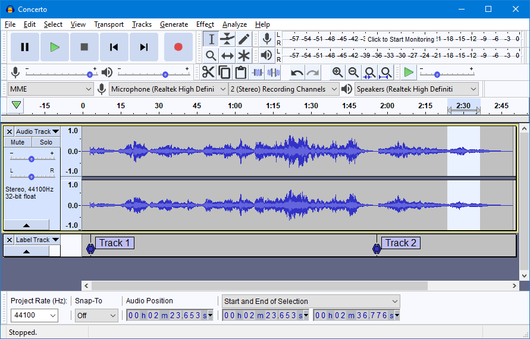

On the bench is a laptop with Audacity open on one side and a Smaart transfer function on the other. Before we argue about IIR or FIR, it helps to look at what the audio actually is.
Part 1
Before we dive into the depths of FIR or IIR filtering, let's talk about audio in general.
We have this custom in audio engineering of analysing everything in the frequency domain. Apparently we inherited it from electrical engineering. It does seem quite logical, after all music is all about sine waves, right?
Wrong!
Look at some recording you made with your favourite DAW (Audacity, for example).


The signal, in stereo, can look something like this. It is the equivalent in voltage to the air pressure — or eventually the position of your eardrum — of the stuff we call sound. No sine wave in sight, is there?
Another argument against the preoccupation with analysis in the frequency domain: tell me the frequency of a handclap, or the whistling wind, or all the consonants we use...
Should we stop talking about sound in the frequency domain? No! But do realise we are using a model of reality when we do.
A model, not the thing itself
Years ago, through the work of Helmholtz and Fourier, the method of decomposing a chunk of a recording like the one above into its sinusoidal components was worked out. (In fact Helmholtz wrote a paper on what happens after this decomposition; look for 'auditory roughness'.)
And we now all have the computational power to use this analysis, via the FFT. If you are not compelled by mathematics whatsoever, think about the FFT as follows: imagine a prism. It decomposes a light beam into the different waves it is built from, into those well-known rainbows. The FFT engine works in a similar way, decomposing a chunk of audio into its sinusoidal components.

Minimum phase, except when it isn't
Now on to the topic at hand.
In some other parts of this blog you can read about using a (dual) FFT analyser to get a frequency-domain analysis of your device under test. In DIY loudspeaker circles, a more common use will be Room EQ Wizard, REW, to obtain what they call frequency response (commonly abbreviated to FR). Mostly they forget about the 'phase' part of the Bode plot.
That isn't really a bad thing. For the most part, a loudspeaker (and filtering) behaves as a minimum phase system. Minimum phase (not minimal!) means that the phase response is dictated by the frequency (magnitude) response and vice versa.
So an FR measurement also holds the information to derive the associated phase response. No magic here, just plain laws of physics. Every deviation you see from the frequency response must have a corresponding phase deviation from that desired 0-phase line. (All under the premise of 'minimum phase' or LTI.)
There is one big exception: all-pass filters! All-pass filters will have a typical phase response without anything reflected in the frequency response, and vice versa. If you think about it, an ideally crossed multi-speaker system will have a flat FR and an overall all-pass phase behaviour, as long as conventional IIR filters are used. Maybe something like this for a 2-way system:

Phase is not delay
If you are still uncomfortable with the concept of phase, don't worry too much. Just don't confuse phase and delay. As defined elsewhere in this blog, we use the word phase (-difference) for that part of the overall frequency-dependent time difference between two components where plain, simple 'excess delay' is stripped away. So:
Time alignment does not equal phase alignment!!
('Time' alignment as a scientific term is a bit Einstein-esque; it is signal alignment... but hey.)